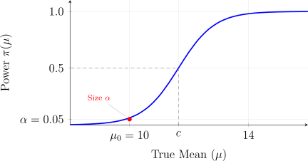

3.2 The Simple Likelihood Ratio and Most Powerful Tests
When both the null and alternative hypotheses are simple, we are essentially choosing between two fully specified probability distributions.
Definition 3.2.1 (Simple Likelihood Ratio Test). Let \(X_1, X_2, \dots , X_n\) be a random sample from a distribution \(f(x; \theta )\). To test \(H_0: \theta = \theta _0\) vs \(H_1: \theta = \theta _1\), we define the likelihood ratio as: \[\lambda (x) = \frac {L(\theta _0; x)}{L(\theta _1; x)} = \frac {\prod _{i=1}^n f(x_i; \theta _0)}{\prod _{i=1}^n f(x_i; \theta _1)}\] The decision rule is:
- Reject \(H_0\) if \(\lambda (x) < k\)
- Fail to Reject \(H_0\) if \(\lambda (x) > k\)
- Randomize if \(\lambda (x) = k\) (used primarily in discrete cases to achieve an exact size \(\alpha \)).
- 1.
- If \(H_0\) is true, \(L(\theta _0)\) should be larger than \(L(\theta _1)\), making \(\lambda (x) > 1\).
- 2.
- If \(H_1\) is true, \(L(\theta _1)\) should be larger, making \(\lambda (x) < 1\).
- 3.
- Therefore, “small” values of \(\lambda (x)\) provide evidence against \(H_0\).
Definition 3.2.3 (Most Powerful (MP) Test). A test \(\phi ^*\) of \(\, H_0: \theta = \theta _0\) versus \(H_1: \theta = \theta _1\) is a most powerful test of size \(\alpha \, (0 < \alpha < 1)\) if
- 1.
- It has exactly \(\alpha \): \(\pi _{\phi ^*}(\theta _0) = \alpha \)
- 2.
- For any other test \(\phi \) with size \(\leq \alpha \), the power of \(\phi ^*\) is at least as large: \(\pi _{\phi ^*}(\theta _1) \geq \pi _{\phi }(\theta _1)\).
i.e. a test \(\phi ^*\) is MP of size \(\alpha \) if it has size \(\alpha \), and if, among all other tests of size \(\alpha \), ie has the largest power.
Lemma 3.2.4 (Neyman-Pearson Lemma). Let \(X\) have probability density function \(f(x;\theta ), \, \theta \in \Omega \). Consider testing a simple null hypotheses \(H_0: \theta = \theta _0\) against a simple alternative \(H_1: \theta = \theta _1\). For a constant \(k\), suppose the critical region defined by \[R = \left \{x:\quad \frac {f(x;\theta _1)}{f(x;\theta _0)}> k\right \}\] corresponds to a test of size \(\alpha \). Then the test with this critical region is a most powerful test of size \(\alpha \) for testing \(H_0: \theta = \theta _0\) against \(H_1: \theta = \theta _1\).
Proof. Consider any other critical region \(R_1\) with small size.
We need to show that \[P_{\theta _1}(X\in R) \geq P_{\theta _1}(X\in R_1)\] now \[P_{\theta _0}(X\in R) = P_{\theta _0}(X\in R_1) = \alpha \] \[\int _Rf(x;\theta _0)\, dx = \int _{R_1}f(x;\theta _0) \, dx\] this implies \[\int _{R\cap R_1}f(x;\theta _0)\, dx + \int _{R\cap R^c_1}f(x;\theta _0)\, dx = \int _{R_1\cap R}f(x;\theta _0)\, dx + \int _{R_1\cap R^c}f(x;\theta _0)\, dx\] \begin {equation} \implies \quad \int _{R\cap R_1^c}f(x;\theta _0)\, dx = \int _{R_1\cap R^c}f(x;\theta _0)\, dx \end {equation} for \(x\in R\cap R^c_1\) \[\frac {f(x;\theta _1)}{f(x;\theta _0)} > k\quad \implies \quad f(x;\theta _1) > k\, f(x;\theta _0)\] so that \begin {equation} \int _{R\cap R^c_1}f(x;\theta _1)\, dx > k\, \int _{R\cap R^c_1}f(x;\theta _0)\, dx \end {equation}
for \(x\in R_1 \cap R^c\) \[\frac {f(x;\theta _1)}{f(x;\theta _0)} < k\] \[f(x;\theta _1) < k f(x;\theta _0)\] \[-f(x;\theta _1) > -k \, f(x;\theta _0)\] this implies \begin {equation} -\int _{R_1\cap R^c}f(x;\theta _1)\, dx > -k \int _{R_1\cap R^c} f(x;\theta _0)\, dx \end {equation} now \begin {align*} P_{\theta _1}(X\in R) & = \int _{R}f(x;\theta _1)\, dx\\ & = \int _{R\cap R_1}f(x;\theta _1)\, dx + \int _{R\cap R^c_1}f(x;\theta _1)\, dx \end {align*}
\begin {align*} P_{\theta _1}(X \in R_1) & = \int _{R_1} f(x;\theta _1)\, dx\\ & = \int _{R_1\cap R}f(x;\theta _1)\, dx + \int _{R_1\cap R^c}f(x;\theta _1)\, dx \end {align*}
\begin {align*} P_{\theta _1}(X\in R) - P_{\theta _1}(X\in R_1) & = \int _{R\cap R^c_1}f(x;\theta _1)\, dx - \int _{R_1\cap R^c}f(x;\theta _1)\, dx\\ & \geq k\int _{R\cap R^c_1}f(x;\theta _0)\, dx - k\int _{R_1\cap R^c}f(x;\theta _0)\, dx \quad (\text {by 3.2 and 3.3})\\ & = k\underbrace {\left [\int _{R\cap R^c_1} f(x;\theta _0)\, dx - \int _{R_1\cap R^c}f(x;\theta _0)\, dx\right ]}_{0 \quad \text {by 3.1}}\\ & = 0. \end {align*}
Therefore, \(P_{\theta _1}(X\in R) - P_{\theta _1}(X\in R_1)\geq 0\,\) or \(\, P_{\theta _1}(X\in R) \geq P_{\theta _1}(X\in R_1)\). □
Example 3.2.5. Let \(X_1, X_2, \cdots , X_n\) be a random sample from \(X\thicksim N(\mu ,16)\). Find the most powerful test of size \(\alpha = 0.05\) of
- \(H_0: \mu = 10\)
- \(H_1: \mu = 12\).
Solution. According to the Neyman-Pearson Lemma, the MP test rejects \(H_0\) when \[\frac {\prod ^n_{i = 1} f(x_i; \theta _1)}{\prod ^n_{i = 1}f(x_i;\theta _0)} > k.\] \[\frac {\prod ^n_{i = 1}\frac {1}{\sqrt {2\pi (16)}}e^{-\frac {1}{2(16)}(x_i - 12)^2}}{\prod ^n_{i = 1}\frac {1}{\sqrt {2\pi (16)}}e^{-\frac {1}{2(16)}(x_i - 10)^2}} > k\]
\[\frac {(32\pi )^{-\frac {n}{2}}e^{-\frac {1}{32}\sum ^n_{i = 1}(x_i - 12)^2}}{(32\pi )^{-\frac {n}{2}}e^{-\frac {1}{32}\sum ^n_{i = 1}(x_i - 10)^2}} > k\]
\[\implies \quad e^{-\frac {1}{32}\sum ^n_{i=1}(x_i - 12)^2+ \frac {1}{32}\sum ^n_{i = 1}(x_i - 10)^2}\, > k\] \[-\frac {1}{32}\sum ^n_{i=1}(x_i - 12)^2+ \frac {1}{32}\sum ^n_{i = 1}(x_i - 10)^2\, >\ln k\] \[\frac {1}{32}\left [\sum ^n_{i=1}(x_i^2 - 20x_i + 100)- \sum ^n_{i = 1}(x_i^2 - 24x_i + 144)\right ]\, > k_1\] \[\implies \quad \sum ^n_{i = 1}\left (x^2_i - 20x_i + 100 - x^2_i + 24x_i - 144\right ) \, > \, k_1(32)\] \[\sum ^n_{i = 1}\left (-44 + 4x_i\right ) > k_2\] \[-44n + 4\sum ^n_{i = 1} x_i > k_2\] \[4\sum ^n_{i = 1} x_i > k_2 + 44n\] \[4\sum ^n_{i = 1} x_i > k_3\] \[\sum ^n_{i = 1} x_i > \frac {k_3}{4} = k_4\] \[\overline {x} > \frac {k_4}{n}\] \[\implies \quad \overline {x} > c\] i.e. \(\, R = \{(x_1, \cdots , x_n)\, |\, \overline {x} > c\}\,\) for some \(c\) \[P_{H_0}\left (\overline {X} > c\right ) = 0.05\] \[P\left (\frac {\overline {X} - \mu _0}{\frac {\sigma }{\sqrt {n}}} > \frac {c - \mu _0}{\frac {\sigma }{\sqrt {n}}}\right ) = 0.05\] \[P\left (Z > \frac {c - 10}{\frac {4}{\sqrt {n}}}\right ) = 0.05\] \[\frac {c - 10}{\frac {4}{\sqrt {n}}} = Z_{0.05}\] Using the standard normal table, \(P(Z > 1.645) = 0.05\). Therefore: \[\implies \quad c = 10 + 1.645\, \frac {4}{\sqrt {n}}.\]
Therefore, \[R = \left \{(x_1, \cdots , x_n)\, |\, \overline {x} > 10 + \frac {6.58}{\sqrt {n}}\right \}\] is the critical region of a MP test of \(H_0: \mu = 10\) versus \(H_1: \mu = 10\). □
Additionally, (\(\alpha =0.05, \mu _0=10, \sigma =4\)), the power function for a sample of size \(n\) is: \[\pi (\mu ) = P_{\mu }(\bar {X} > c) = 1 - \Phi \left ( \frac {c - \mu }{4/\sqrt {n}} \right )\] where \(c = 10 + 6.58/\sqrt {n}\).

Exercise 3.2.6. Let \(X_1, X_2, \cdots , X_n\) be a random sample from \(X\thicksim N(\mu , \sigma ^2)\) with \(\sigma ^2\) known. Find the most powerful test of size \(\alpha \) of \(\, H_0:\, \mu = \mu _0\, \) against \(\, H_1: \, \mu = \mu _1\) (where \(\mu _1 > \mu _0\)).
Example 3.2.7. Let \(X_1, X_2, \cdots , X_n\) be a random sample from \(N(\mu , \sigma ^2)\) with \(\mu \) known. Find the most powerful test of size \(\alpha \). of \(H_0: \sigma = \sigma _0\) versus \(H_1: \sigma = \sigma _1\) (where \(\sigma _1 < \sigma _0)\).
Solution. According to the Neyman-Pearson Lemma, the MP test rejects \(H_0\) when \[\frac {\prod ^n_{i = 1} f(x_i;\theta _1)}{\prod ^n_{i = 1} f(x_i; \theta _0)} > k.\] \[\frac {\prod ^n_{i = 1}\frac {1}{\sqrt {2\pi \sigma ^2_1}}e^{-\frac {1}{2\sigma ^2_1}(x_i -\mu )^2}}{\prod ^n_{i = 1}\frac {1}{\sqrt {2\pi \sigma ^2_0}}e^{-\frac {1}{2\sigma ^2_0}(x_i -\mu )^2}} > k\] \[\frac {(2\pi \sigma ^2_1)^{-\frac {n}{2}} e^{-\frac {1}{2\sigma ^2_1}\sum ^n_{i = 1}(x_i -\mu )^2}}{(2\pi \sigma ^2_0)^{-\frac {n}{2}} e^{-\frac {1}{2\sigma ^2_0}\sum ^n_{i = 1}(x_i -\mu )^2}} > k\] \[\left (\frac {2\pi \sigma ^2_0}{2\pi \sigma ^2_1}\right )^{\frac {n}{2}}e^{\frac {1}{2\sigma ^2_0}\sum ^n_{i = 1}(x_i -\mu )^2 - \frac {1}{2\sigma ^2_1}\sum ^n_{i =1}(x_i - \mu )^2} > k\] \[e^{\left (\frac {1}{2\sigma ^2_0}-\frac {1}{2\sigma ^2_1}\right )\sum ^n_{i = 1} (x_i - \mu )^2}> k_1\] \[\frac {1}{2}\left (\frac {1}{\sigma ^2_0}-\frac {1}{\sigma ^2_1}\right )\sum ^n_{i = 1} (x_i - \mu )^2> k_2\] \[\sum ^n_{i = 1}(x_i - \mu )^2 < \frac {k_2}{\frac {1}{2}\left (\frac {1}{\sigma ^2_0}-\frac {1}{\sigma ^2_1}\right )}\] \[\implies \quad \sum ^n_{i = 1} (x_i - \mu )^2 < c\]
i.e. \(\, R = \left \{(x_1,\cdots , x_n)\, |\, \sum ^n_{i = 1}(x_i - \mu )^2 < c\right \}\)
Now \[P_{H_0}\left (\sum ^n_{i = 1}(X_i - \mu )^2 < c\right ) = \alpha \] \[P\left (\sum ^n_{i = 1} \left (\frac {X_i- \mu }{\sigma _0}\right )^2 < \frac {c}{\sigma _0^2}\right ) = \alpha \] \[P\left (\chi ^2_n < \frac {c}{\sigma ^2_0}\right ) = \alpha \] that is \[\frac {c}{\sigma ^2_0} = \chi ^2_{n,1-\alpha } \quad \implies \quad c = \sigma ^2_0\, \chi ^2_{n,1-\alpha }.\] Therefore \[R = \left \{(x_1, \cdots , x_n)\, |\, \sum ^n_{i = 1}(X_i - \mu )^2 < \sigma ^2_0\, \chi ^2_{n,1-\alpha }\right \}\] is the critical region of a MP test of \(H_0: \sigma = \sigma _0\) versus \(H_1: \sigma = \sigma _1 \, (\sigma _1 < \sigma _0)\). □
Example 3.2.8. Let \(X_1,X_2,\cdots ,X_n\) be a random sample from exponential \[f_X(x,\lambda )=\frac {1}{\theta }e^{-\frac {x}{\theta }},\quad \lambda >0,\quad x>0\] Find the most powerful test for testing \(\, H_0:\theta =\theta _0\,\) against \(\,H_1:\theta =\theta _1\) where \(\theta _0>\theta _1\)
Solution. According to the Neyman-Pearson Lemma, the MP test rejects \(H_0\) when \[\frac {\prod ^n_{i = 1}f(x_i;\theta _1)}{\prod ^n_{i = 1}f(x_i;\theta _0)} > k.\] \[\frac {\theta ^{-n}_1e^{-\frac {1}{\theta _1}\sum ^n_{i = 1} x_i}}{\theta ^{-n}_0e^{{-\frac {1}{\theta _0}}\sum ^n_{i = 1} x_i}} > k\] \[\left (\frac {\theta _0}{\theta _1}\right )^ne^{{-\left (\frac {1}{\theta _1}-\frac {1}{\theta _0}\right )}\sum ^n_{i = 1}x_i} > k\] \[n[\ln (\theta _0)-\ln (\theta _1)] - \left (\frac {1}{\theta _1}-\frac {1}{\theta _0}\right )\sum ^n_{i = 1} x_i > k_1\] \[- \left (\frac {1}{\theta _1}-\frac {1}{\theta _0}\right )\sum ^n_{i = 1} x_i > k_2= k_1 +n[\ln (\theta _0) - \ln (\theta _1)]\] We are given that \(\theta _0 > \theta _1\). This implies: \[\frac {1}{\theta _1} > \frac {1}{\theta _0} \implies \left (\frac {1}{\theta _1} - \frac {1}{\theta _0}\right ) > 0.\] Therefore \[\sum _{i=1}^n x_i < \frac {k_2}{-\left (\frac {1}{\theta _1} - \frac {1}{\theta _0}\right )}\] \[\sum _{i=1}^n x_i < c\] The critical region is therefore \(R = \{ (x_1, \dots , x_n) | \sum _{i=1}^n x_i < c \}\).
Now, to find \(c\), we need the distribution of \(Y = \sum ^n_{i = 1} X_i\). Recall that if \(X_i \sim \text {Exp}(\theta )\), then \(\sum X_i \sim \text {Gamma}(n, \theta )\). Furthermore, it is a standard result that \(\frac {2\sum ^n_{i = 1} X_i}{\theta } \sim \chi ^2_{2n}\). \[P_{H_0}(\sum X_i < c) = \alpha \] Standardize to the Chi-square distribution by multiplying by \(\frac {2}{\theta _0}\): \[P\left ( \frac {2\sum X_i}{\theta _0} < \frac {2c}{\theta _0} \right ) = \alpha \] \[P(\chi ^2_{2n} < \frac {2c}{\theta _0}) = \alpha \] Using the notation \(\chi ^2_{2n, 1-\alpha }\) for the value that leaves \(\alpha \) in the lower tail: \[\frac {2c}{\theta _0} = \chi ^2_{2n, 1-\alpha } \implies c = \frac {\theta _0}{2} \chi ^2_{2n, 1-\alpha }\] The Most Powerful test of size \(\alpha \) rejects \(H_0\) if: \[\sum _{i=1}^n x_i < \frac {\theta _0}{2} \chi ^2_{2n, 1-\alpha }\] The critical region is therefore \[R = \left \{ (x_1, \dots , x_n) | \sum _{i=1}^n x_i < \frac {\theta _0}{2} \chi ^2_{2n, 1-\alpha }\right \}.\] □
Note 3.2.9. For a given \(\alpha \), it is not always possible to find a value \(c\) such that this is true. e.g. Let \(n = 3, \quad \theta _0 = \frac {3}{4}, \quad \theta _1 = \frac {1}{4}, \quad \alpha = 0.05.\quad \) Then \(\, \operatorname {BIN}(3,\frac {3}{4})\) has distribution.
| \(y\) | 0 | 1 | 2 | 3 |
| \(P(Y = y)\) | 0.0156 | 0.1406 | 0.4219 | 0.4219 |
i.e \[P(Y = 2) = \binom {3}{2}\left (\frac {3}{4}\right )^2\left (\frac {1}{4}\right ) = 0.4219\] Then, if \begin {align*} c = 0, & \quad P_{\theta _0}(Y \leq c) = P(Y = 0) = 0.0156\, < \, 0.05\\ c = 1, & \quad P_{\theta _0}(Y\leq c) = P(Y = 0) + P(Y = 1) = 0.1562\, > 0.05 \end {align*}
In discrete cases, the “jump” in cumulative probability can skip over the desired \(\alpha \). As shown in the example with \(Y \sim \text {Bin}(3, 0.75)\): If we reject only at \(y=0\), our size is \(0.0156\) (too conservative). If we reject at \(y=0\) and \(y=1\), our size jumps to \(0.1562\) (exceeds \(\alpha = 0.05\)). To fix this, we use a Randomized Test, where if the test statistic hits the boundary value, we reject \(H_0\) with a specific probability \(p\). This allows us to hit exactly \(\alpha = 0.05\) on average.
Questions on this section
Stuck on something here? Ask below and it stays attached to this topic.